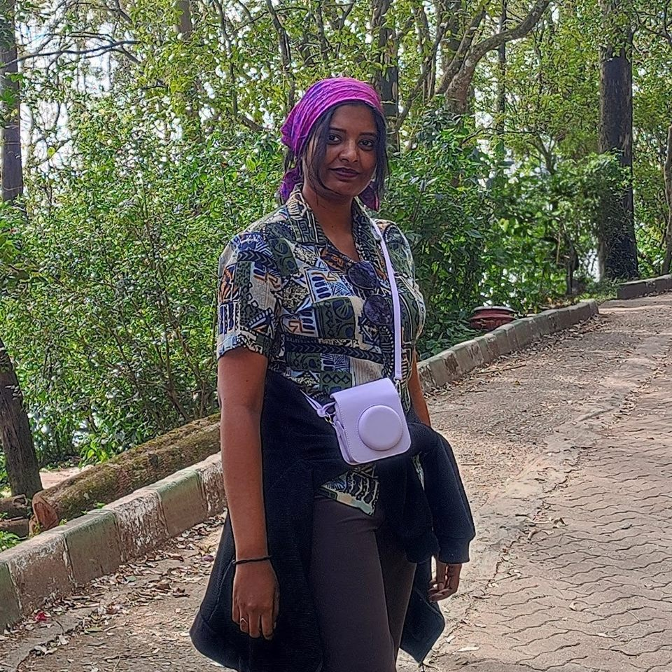
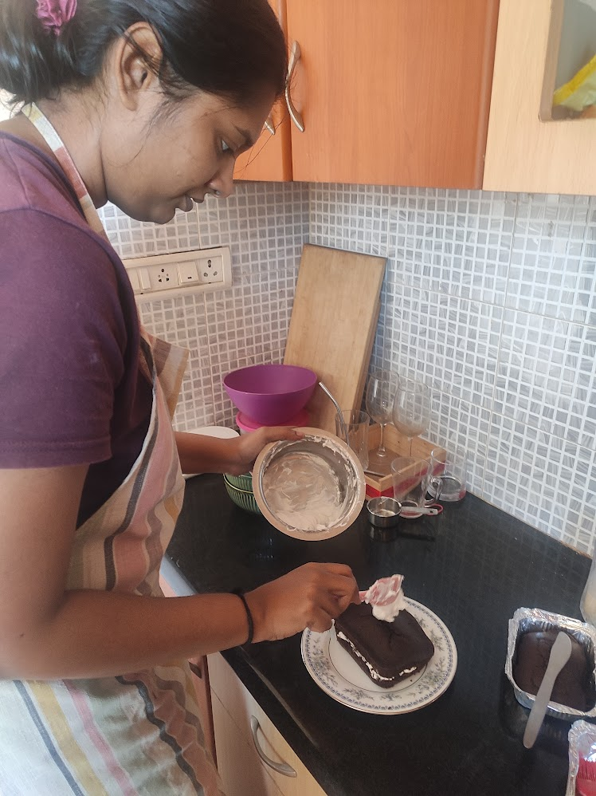
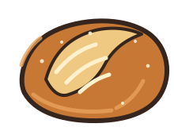
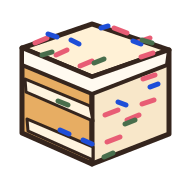
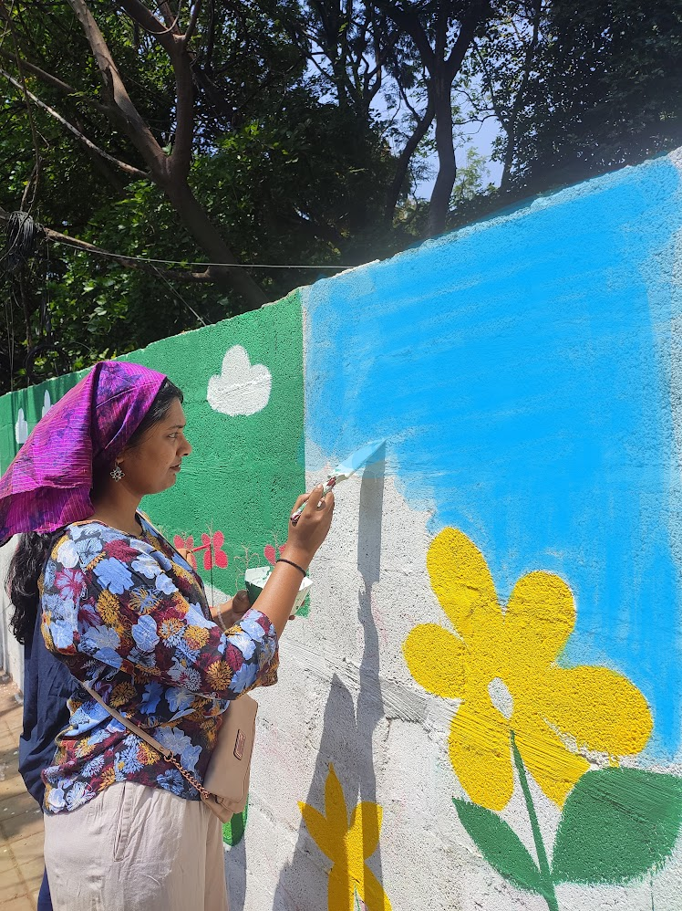
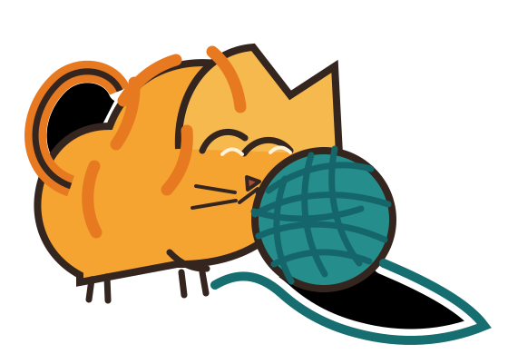
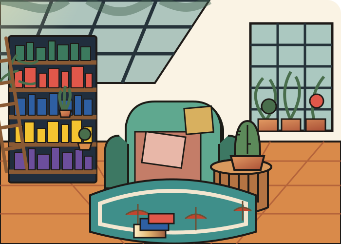

This is where I keep the parts of my week that never make it onto a resume.
The corner of the internet where I keep my paintbrushes and palette, my yoga mat, my tarot deck, my sourdough starter, and my sewing basket.

Pradheepa Ramasundaram
Practitioner & Maker
I Started This Because I Kept Forgetting Who I Am Outside of Work
I am a lot of things beyond my job title.
I wanted to document the parts of my life that live outside of work: the things I enjoy, the things I'm learning, the small moments that make life feel like mine again. So I created this website as a personal digital diary, a space to capture that part of my journey.
It started as a small act of rebellion against the idea that my work should define me. A little space for the person I am when nobody's asking what I do for a living.
I don't have it all figured out, and I don't think I need to. This is simply a place to slow down, follow my curiosity, make things, learn things, and romanticize the ordinary parts of being alive.
My Body, Mind, and Me
I started practicing yoga simply because I liked it. I preferred its flexibility and slower pace over the usual cardio-heavy gym sessions. It felt more like me.
Over time, I began appreciating the calm that came with it too. The breathing, the stretching, the quiet time on the mat, all of it felt good. Even after a tiring session, when my body is sore, there's something satisfying about that feeling.
More than the physical benefits, yoga has helped me calm my nerves and become more aware of my posture and my body.
Some days, I feel like skipping a class. More often than not, I end up regretting it.
I still need to get better at practicing regularly. Meditation and pranayama have helped along the way too, especially on the days when I need to slow down and settle my mind.
Yoga tutorial: Surya Namaskar for beginners →Ready to ground
A 60-second box breathing pause to center yourself.

Whispers from the universe
I came across tarot through YouTube, and somehow, I found myself drawn to it.
I've always believed there's something bigger than us. Tarot felt like a natural way to explore that curiosity, along with my interest in the universe, intuition, and energy.
I mostly do readings for myself. I enjoy sitting with the cards, trying to understand what they might be telling me, and seeing how the interpretation connects with what's happening in my life.
I haven't always been accurate, of course. But there have been a few readings where I somehow got it surprisingly right. I'm still figuring out what I make of all of it, and for now, I'm happy just exploring.
My first deck was the Rider-Waite. It's starting to fall apart around the corners now, and honestly, I love it even more because of that.
Learn tarot with me: TarotQuest →Nothing like the smell of fresh bread!
My partner was my first baking tutor. I still can't quite put into words the high I felt after baking my first cake.
It was a chocolate cake with marshmallow frosting, and it was delicious. But more importantly, I had actually baked a cake from scratch, and I was hooked.
When I bake, time seems to slow down. It has taught me patience, especially on the days I really want to peek into the oven or rush through a step.
Lately, I've been getting into bread, especially focaccia. Sourdough is still on my list; it's supposedly the toughest one, so I'm working my way up to it.
I've also tried my fair share of desserts, from pies to pastries. And there's one very predictable ending to all of them: my partner and I somehow manage to finish them in one sitting, usually while they're still warm from the oven.



Little Dabbles Here and There
I dabble in a little bit of everything when it comes to art: acrylics, watercolours, oil pastels, and lately, I've been trying my hand at gold foil painting and linocut printing too.
I like not sticking to just one medium. Each one teaches me something different: watercolours have taught me to let go of control, acrylics let me be a little more forgiving with mistakes, and linocut is teaching me patience of an entirely different kind, one cut at a time.
I'm always on the lookout for a good workshop in the city. There's something about learning a technique in a room full of strangers, all equally unsure of what they're making, that I find oddly comforting. So if you're reading this and know of one, or just want to tag along to the next one I find, let me know. I'd love the company.
I also offer art classes and creative workshops for kids and adults.

This Queen's Gambit
I learned the basics of chess as a kid, the way most of us do: a cousin taught me the pieces and their moves on a lazy afternoon.
I picked it up again as an adult, and it's been a strange, humbling experience. The rules came back to me quickly, but I'm still relearning how to think ahead, be patient, and sit with a position long enough to plan. I lose more games than I win, and I'm slowly making peace with that.
What I like most about coming back to it now is that it's just me, the pieces, and the satisfaction of a game well thought through, win or lose.
Follow my games on Chess.com →"I once spent forty minutes on a single move, talked myself into what felt like a brilliant sacrifice, played it with far too much confidence, and lost the game two moves later. I still think about that sacrifice more fondly than I have any right to."
Stitching My Boredom Away

Stitching My Boredom Away
I'm just starting out with crochet, so consider this entry a very early chapter. Right now, it's mostly about learning to hold the hook correctly and not lose count of my stitches.
I'm a little further along with embroidery. I've completed two guided embroidery pieces so far, both following patterns rather than anything from my own imagination. There's something meditative about it, though: the slow, repetitive motion of the needle and watching a picture take shape one stitch at a time.
What I like most is how portable both of these are. I can carry a small hoop or a half-finished granny square almost anywhere, and suddenly a commute or a lazy evening on the couch turns into something beautiful.

Stitching My Boredom Away
I'm just starting out with crochet, so consider this entry a very early chapter. Right now, it's mostly about learning to hold the hook correctly and not lose count of my stitches.
I'm a little further along with embroidery. I've completed two guided embroidery pieces so far, both following patterns rather than anything from my own imagination. There's something meditative about it, though: the slow, repetitive motion of the needle and watching a picture take shape one stitch at a time.
What I like most is how portable both of these are. I can carry a small hoop or a half-finished granny square almost anywhere, and suddenly a commute or a lazy evening on the couch turns into something beautiful.

Fiction and Iced Coffee
I have a cozy reading nook that might just be my favourite corner of the house: good lighting, a comfortable chair, and nowhere else I need to be for a while. Iced coffee, a reading nook, and a good book—that's my equation for pure bliss.
Mostly fiction—whatever pulls me in fastest—though I go through phases: a mystery binge, a memoir stretch, and one summer when I read nothing but classics. My Goodreads is a mess of five-star ratings I gave in the heat of the moment and a to-read shelf I'll never actually clear, and I love it exactly as it is.
Find me on Goodreads →"I once finished a book in one sitting because I could not stand not knowing how it ended, then stayed up far too late doing the exact same thing again a week later with a different book."

Read With Me
Mix a little rain, fireside crackle, and a ticking clock while you read along.
A digital diary for my side quests
Smaller Things I Am Currently Obsessed With
A running list of the smaller rabbit holes I fall into between the bigger practices above. Some of these stick around for years. Some last for exactly one stretch of a season.